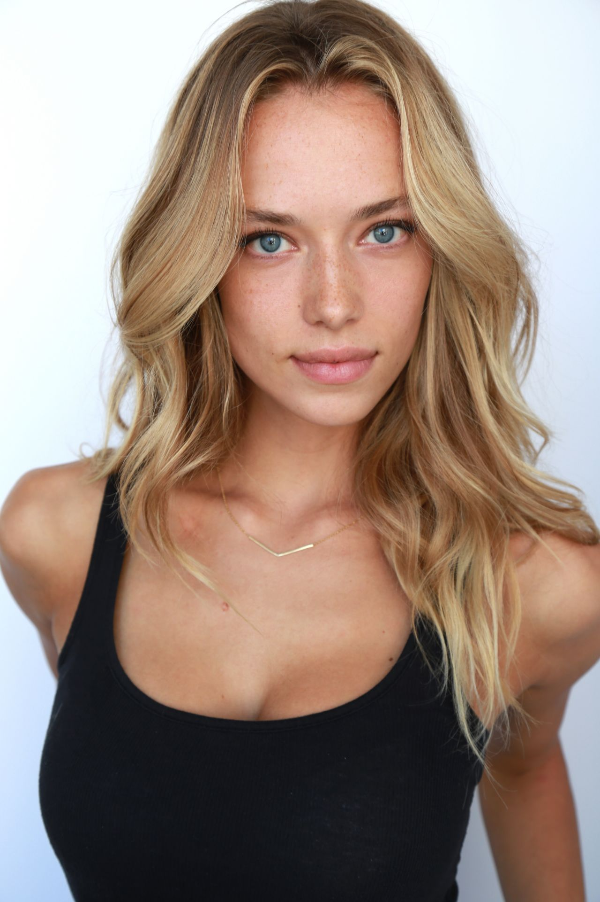
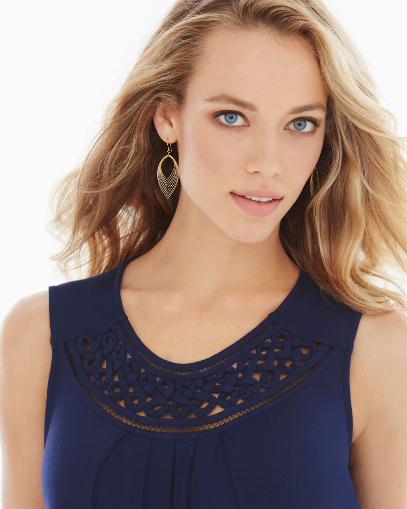
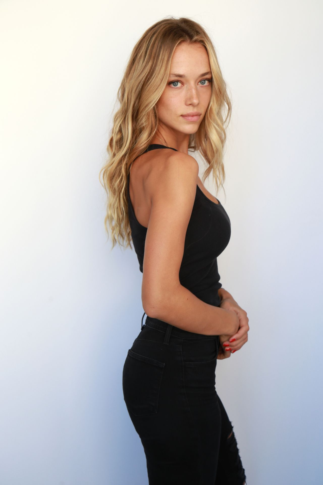
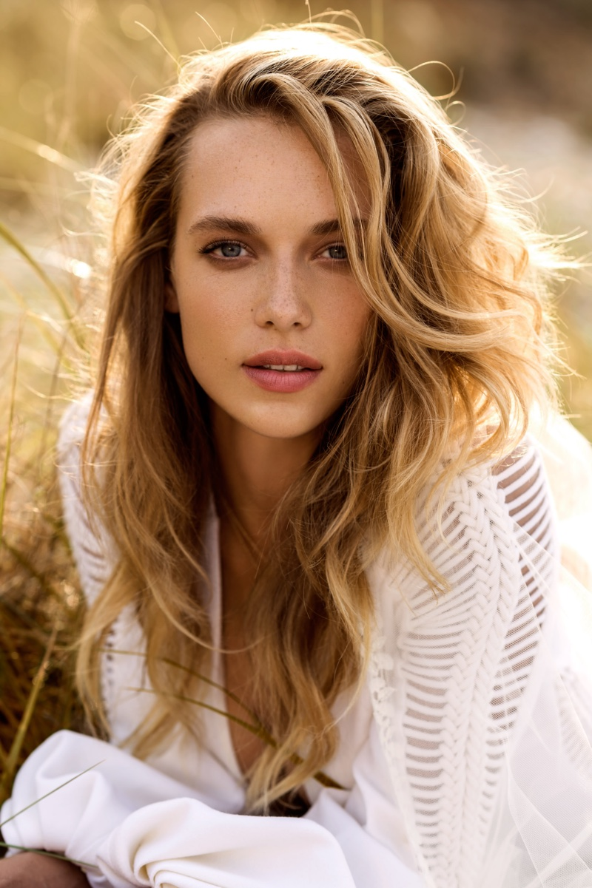
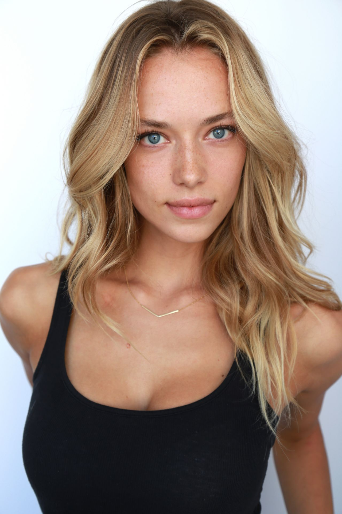
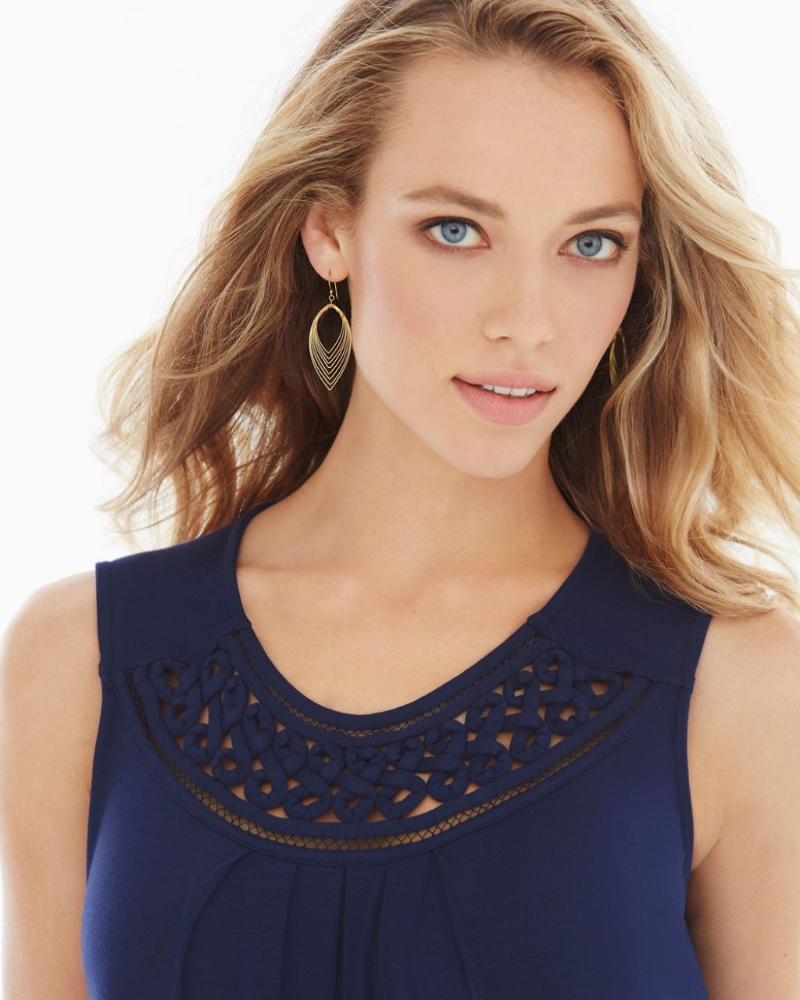
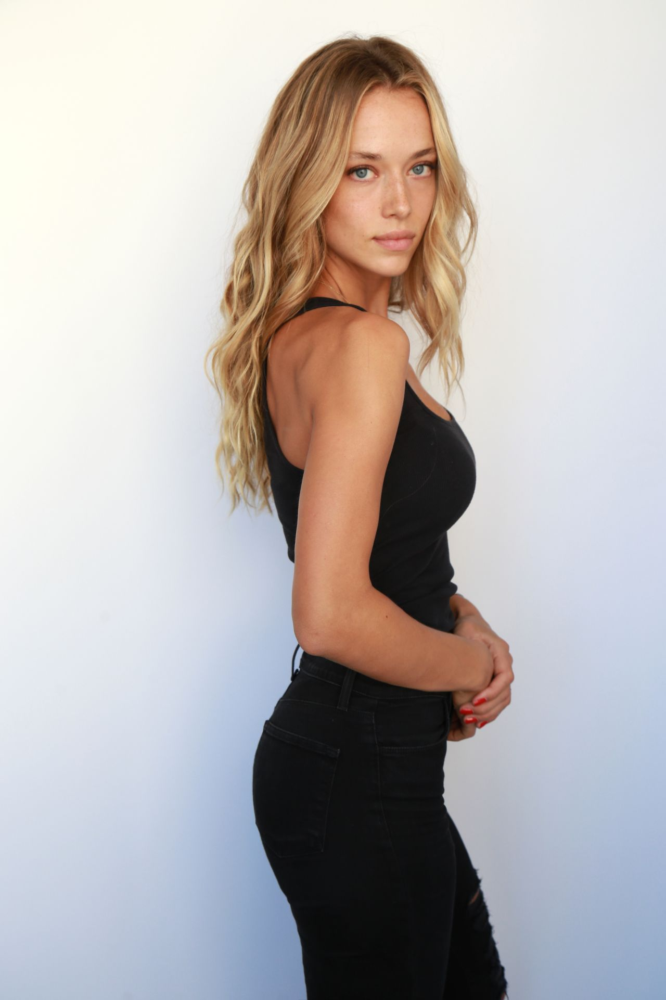
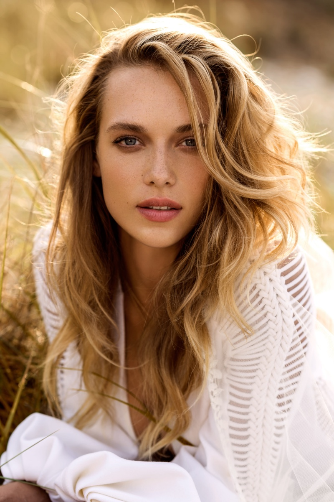

Savannah Juergeson
Runway Agency, Ltd.
1313 Broadway Avenue 1234
New York City, NY 12345
runwayagency@gmail.com,
888-808-8088
Fashionista
   
Runway Agency, Ltd.
1313 Broadway Avenue 1234
New York City, NY 12345
runwayagency@gmail.com,
888-808-8088
   
Overview
A Fashion Model with 8 years' experience in commercial projects, successfully modeled for brands such as Lucky Jeans, Billabong Surfwear and Troy Lee Designs and possesses the specific traits that many designers and fashion directors look for.
Flexible, adaptable, stylish, versatile, efficient, hard-working, good at taking directions and capable of wearing all kinds of clothing styles.
Objective- To work in a fashion firm, in which I can utilize my modeling skills to become a perfect link between the brands and their clients.
Sports Illustrated 2014 - Present